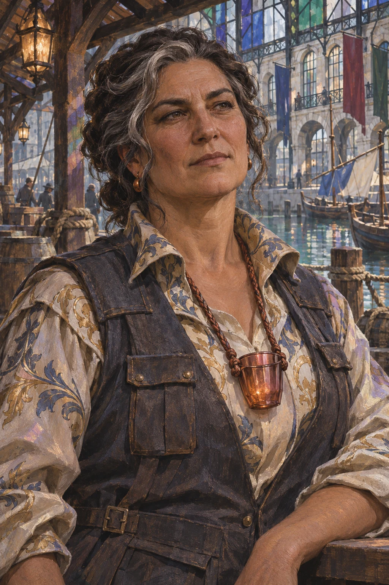
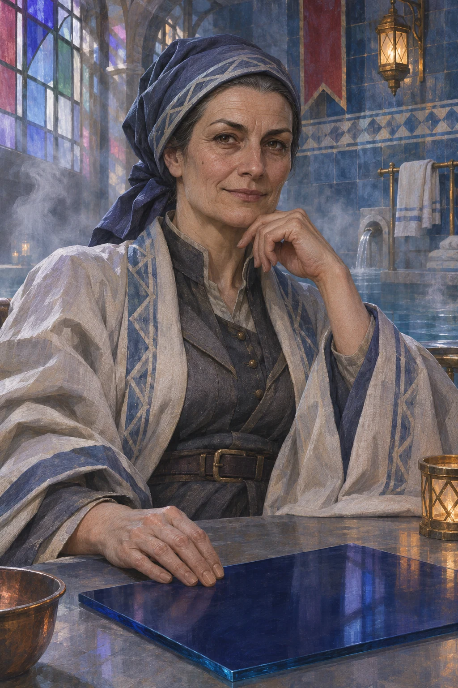

Решить, что взять у Гелены, услышать условие капитана знаменосцев и свести Ростислава к пристани по Медному спуску.

Гелена ШирБогдан Ольшев

Иветта СоммРостислав ПелльКассия Аммер
Если партия изменила план
Игроки раскрыли тайну раньше
Обойдём двери по забываемому приказу, запишем, кто сменил посты. Доступные свидетельства — Приказ, который просят забыть, Двери без обхода. Приказ Кассии оставил Нижние двери без обхода. Люди Карха уже пользуются этим проходом. Показываем приказ тем, кто отвечал за обход. Проверяем цепочку приказов со старшими причалов. Предупреждение расходится раньше знаменосцев; обнародование имён требует решения самих людей.
Партия уступила поле
Отряд теряет угол Медного спуска, связной не проходит. Предупреждаем оставшихся у пристани депутатов по именам. Предупреждаем ближайших депутатов лично, остальных вычёркиваем из списка подтверждённых. Палата получает неполное предупреждение.
Вечер. По Медному спуску, от Тихого сада вниз к пристани, носильщики несут последние ящики праздника. Ступени мокрые, парапет блестит, под навесом собраний качается медный фонарь. На каждом ящике — белая бирка с цифрой 7. Носильщики ставят их бережно, как стекло, и всё равно морщатся от веса. Высоко над крышами на балконе Палаты вешают рамы для огней: они вспыхивают по очереди — красная, молочная, зелёная, медная.
Подготовка и роли
Шкала: числа вслух, карандашом на faction-sheet; порядок АР НИ ПА РЕ ПР ТД, пределы 0 и 6, лишнее сгорает. В этот вечер двигают: сделка — лидер получил то, что просил: дом +1 и/или стекло отряду; услуга людям дома — +1; услуга армии до вечера 5 (помочь с подъёмом знамён) — АР +1, это ловушка, стол о ней не знает, не подсказывайте. Отдать стекло Кассии по её поручению — стекло у неё, чисел нет. Медное стекло (copper-glass) появляется в сц. 1; у Кассии оно значит: причалы в ночь сидят дома, старшие — в арестах 01:00. Встреча «Угол Медного спуска» необязательна, «Тихих» по пакету 3 / 4 / 4: Ростислав спасён, если в конце раунда 5 он не на столбце A; дошёл до столбца N раньше — бой кончен сразу. «Тихие» его не ранят и уходят, как только один упал или Ростислав восточнее столбца M. Сдвиг ТД в сц. 3 — эхо в конце сцены. Мирные пути и цены — в сц. 3; лодка — только при Причалах ≥ 4 и сделке в сц. 1. Поручение Кассии из вечера 2 — имена старших причалов «для защиты» и медное стекло. В сц. 4 она называет письмо в Доме складок (это путь А вечера 4) и даёт поручение на вечер 4: Юла в Зале и её прозрачное стекло. Ориентир: А 6 6 3 4 4 2 (РЕ, ПР у Кассии); Б 4 4 4 4 5 4 (стёкла у отряда); В 6 5 3 4 4 0 (Ростислав уведён).
Зарина Мойл: причалы — её дом. В сц. 1 она читает Гелену («Она дрожит не от просьбы, а от бланка») и по квитанциям находит копию просьбы Нити; в сц. 3 может договориться о лодке.
Надир Ро: в сц. 2 бирка роты — Богдан сам показывает маршрут с условием. Надир решает, что сказать бывшему капитану сейчас, а что оставить до вечера 7.
Илан Корвин: в сц. 3 ведёт по спуску Ростислава, своего учителя, и держится рядом с ним в бою, чтобы «Тихие» его не увели.
Матиас Оберт и Ора Милл (7–8 игроков): Матиас свидетельствует обещание Гелене в сц. 1 — данное при нём, оно засчитывается +1 сразу. Ора в сц. 3 видит в стекле медного фонаря отражение серых плащей за углом: это тот же путь без броска, что кивок проводника.
Сцена 1 · 40 минут
Имена для защиты (Причалы)
Навес собраний на Медной пристани. Гелена Шир сидит на ящике с биркой «7», медное стекло на шнурке ходит у неё в пальцах. На бочку она кладёт бланк с белой ниткой в углу — просьбу Нити: имена старших товариществ «для защиты в ночь знамён» (names-for-protection, без броска). «Имена — это люди, а не защита». Носильщики за её спиной молчат; двое старших товариществ стоят у столба и делают вид, что не слушают. Зарине она кивает: «Ты наши квитанции знаешь. Скажи им, сколько тут людей». Потом снимает стекло и держит над бланком — сквозь медь белая нитка кажется ржавой. «Стекло дам. Обещайте, что в ночь знамён моих предупредят, если за ними придут». Вслух, если сделка: «Причалы +1 — сделка с Геленой: обещали предупредить её людей». Если взяли и имена, и стекло: «Чисел нет, стекло у отряда». Число — карандашом на схеме.
Выборы
Взять имена и медное стекло: стекло у отряда, имена на руках до сц. 4; чисел нет.
Взять только стекло и пообещать предупредить её людей в ночь знамён: сделка, Причалы +1, стекло у отряда.
Отказаться от обоих: бланк уходит под жилетку, стекло остаётся у дома; чисел нет.
Проверка и путь без броска
Проницательность СЛ 13: Гелена боится не просьбы, а Кассии лично — бланк держит за край, как горячий. Без броска — Зарина: «Она дрожит не от просьбы, а от бланка». О своём прошлом Гелена здесь не говорит. Улика names-for-protection — без броска: бланк на бочке; если стол ушёл раньше, копия просьбы есть в конторе закупщиков, Зарина находит её по квитанциям.
Если не получилось
Гелена прячет бланк: «Решайте до вечера». Условие в силе до сц. 4; сделка, заключённая до «Угла», ставит у нижней ступени её лодку.
Сцена 2 · 40 минут
Условие капитана (Армия)
Знамённый двор, помост репетиций. Знаменосцы Богдана Ольшева тянут знамя на верёвках к деревянному макету балкона с рамой из простого стекла. У ворот штаба горит красный фонарь. Богдан считает: «Раз — выше. Два — держать». Знамя цепляется за раму, стекло звенит, колонна начинает подъём заново. Если Ефрем помог знаменосцу в вечер 1, капитан кивает ему первым. Кто-то в колонне шутит, что ящики двора уехали в подвал Палаты раньше знамён. Богдан обрывает: «Канцлер уходит сама. Я несу ей знамёна, а не ящики». На его маршруте приписка карандашом: через Нижние двери — «при добровольной отставке канцлера» (captain-condition). Про «офицеров штаба» отвечает просто: «Почётный эскорт, сказали». Если Надир покажет бирку роты, капитан сам протягивает лист: «Ро, ты же меня учил: читай приказ до конца». Если отряд берётся за верёвку — вслух: «Армия +1 — услуга: помогли колонне с подъёмом».
Выборы
Взяться за верёвку и помочь с подъёмом: услуга армии, Армия +1 (вслух; почему это плохо, стол пока не знает).
Спросить про «офицеров штаба» в колонне: «Почётный эскорт, сказали»; чисел нет.
Промолчать и смотреть маршрут со стороны: чисел нет.
Проверка и путь без броска
Убеждение СЛ 12: Богдан называет весь маршрут — площадь, Нижние двери, двор Палаты в 23:00. Без броска — Надир с биркой роты (field-tally): капитан показывает маршрут с припиской сам. Условие (captain-condition) он называет любому, кто спросит, без броска. Помощь сорвавшемуся знаменосцу чисел не двигает.
Если не получилось
Знаменосец, сматывая верёвку, повторяет вслух: «Площадь, Нижние, двор, в одиннадцать. Если канцлер уходит сама». Улика открыта.
Сцена 3 · 40 минут
Угол Медного спуска (Армия — Седьмая комната)
Сумерки у восточных ворот Тихого сада. Иветта Сомм прячет синее стекло в рукав: «Сведите его к пристани. Сад уже знают». Ростислав Пелль в вытертом плаще трогает подкладку: «Я не герой. Я курьер». Проводник Иветты идёт первым, Ростислав держится ближе к Илану и не отпускает подкладку. Мокрые ступени, парапет на севере, крытый проход посередине. Когда Ростислав под проходом, из-за угла старого дома выходят «Тихие» Седьмой комнаты в сером, по пакету 3 / 4 / 4 на 6 / 7 / 8 игроков. Один шепчет: «Он наш. Отойдите». Это встреча «Угол Медного спуска»: бой, если стол не выбрал мирный путь. На слова «Мы люди Аммер» серые кивают: «Тогда он ваш» — и уходят (seventh-courtesy). Если Причалы 4 или выше и в сц. 1 была сделка, у нижней ступени ждёт лодка Гелены с медным фонарём. Исход — вслух числами из выборов; Третья дверь — эхом в конце сцены: «Армия −1; эхо: Третья дверь +1 — Ростислава отбили».
Выборы
Драться: спасён, если в конце раунда 5 он не на столбце A (дошёл до N — бой кончен): АР −1, ТД +1; уведён — АР +1, ТД −1.
Сказать «Мы люди Аммер»: «Тихие» уходят. ТД +1 — Ростислав у пристани; ТД −1 — проводник Иветты слышал, чьи вы.
Позвать лодку Гелены (только Причалы ≥ 4 и сделка в сц. 1): боя нет, ТД +1 — Ростислав ушёл водой.
Отдать Ростислава «Тихим»: АР +1, ТД −2; он у Седьмой комнаты до торга в вечере 6.
Проверка и путь без броска
Восприятие СЛ 13: засада у угла дома видна заранее, отряд действует первым в инициативе. Без броска — проводник Иветты молча кивает на угол, и отряд успевает встать. Улика seventh-courtesy — без броска: «Тогда он ваш» звучит и при «Мы люди Аммер», и когда «Тихие» уходят из боя; запасной путь — сц. 4.4.
Если не получилось
Исход по встрече, числа вслух. Уведённый или отданный Ростислав — у Седьмой комнаты до торга в вечере 6. Спасённого Иветта прячет в своей мастерской на пристани: «Я не спасаю. Я вывожу».
Сцена 4 · 40 минут
Имена или стекло (Белая нить)
«Два стекла», поздний вечер. Двойные окна чайной запотели; за ними площадь и тёмный балкон Палаты. Кассия Аммер пишет тремя чернилами по очереди, янтарный кулон лежит на бумаге. Она протягивает ладонь, не поднимая глаз: «Имена и медное стекло — мне. Завтра в Доме складок — моё письмо седьмой группе». Если отряд отдаёт, она кладёт медное стекло на схему рядом с зелёным, если то уже у неё, а имена переписывает на отдельный лист. Потом поручение на вечер 4: «Юла Нер должна быть в Зале знамён всю ночь. И принесите её прозрачное стекло». Вслух, если отдали: «Чисел нет — поручение исполнено, медное стекло у Кассии». Если стол солгал, что Гелена отказала, — ничего не говорите: ложь всплывёт в сц. 5.2. На прощание Кассия поправляет кулон: «Забыть — это навык. Им владеют все, кто долго служит». Отряд уходит мимо двойных окон.
Выборы
Отдать имена и медное стекло: стекло ПР у Кассии, имена в её списке; чисел нет (поручение).
Отдать стекло без имён: стекло у Кассии, имён у неё нет; чисел нет.
Солгать, что Гелена отказала: стекло остаётся, где было; в сц. 5.2 Кассия назовёт ложь — НИ +1, ТД −1.
Сказать правду и ничего не отдать: чисел нет.
Проверка и путь без броска
Проницательность СЛ 14: имена она пишет не в схему «защиты», а на отдельный лист. Без броска — Тера кладёт второе стекло на её схему и видит зелёную графу «Причалы — от обходной». Провал ничего не закрывает: поручение на вечер 4 и письмо в Доме складок Кассия называет в любом случае.
Если не получилось
«Тогда принесите завтра». Про письмо в Доме складок Кассия говорит всё равно — путь А вечера 4 открыт.
Имена для защиты
Бланк Белой нити с белой ниткой, продетой в угол: вежливая просьба к старшей причальных товариществ и пустые строки для имён.
Что можно установить
Белая нить просит Гелену Шир дать имена старших причальных товариществ «для защиты в ночь знамён». На янтарных полях листа третьего стоит «Причалы — лист от обходной группы»: по этому листу старших причалов возьмут в аресты 01:00 ночи знамён. Защиты нет — есть список.
Получение
Сц. 3.1: Гелена показывает бланк сама: «Имена — это люди, а не защита». Без броска. Что имена пойдут в аресты, видно при сверке с янтарными полями (сц. 6.2).
Запасной путь
Копия просьбы лежит в конторе закупщиков причалов: Зарина находит её по своим квитанциям (`buyer-receipts`) без броска.
Условие капитана
Маршрут знамён, приколотый к помосту репетиций: площадь — Нижние двери — двор Палаты, 23:00; внизу приписка карандашом капитанской рукой.
Что можно установить
Капитан знаменосцев Богдан Ольшев ведёт знамёна в 23:00 через Нижние двери во двор Палаты «при добровольной отставке канцлера» — это его условие, приписанное к маршруту. С колонной пойдут «офицеры штаба»; ему сказали — «почётный эскорт». О списке, подвале и закрытии Палаты ему не говорили.
Получение
Сц. 3.2: спросить Богдана о маршруте. С Надиром и полевой биркой он показывает приписку сам; Убеждение СЛ 12 только ускоряет разговор.
Запасной путь
Знаменосец, не дождавшись капитана, повторяет маршрут и объяснение вслух. Или сц. 7.1: Богдан сам читает свою приписку, когда ему кладут рядом список Зала.
Привет госпоже Аммер
Учтивость Знамённого двора: генерал и люди в сером встречают обходную группу как своих и передают «привет госпоже Аммер»; записка без печати в одну строку: «23 — наши. О.».
Что можно установить
Орен Вальт и Седьмая комната принимают обходную группу за посланцев Кассии Аммер и говорят с ней как с союзниками. Орен: «Передайте госпоже Аммер: в одиннадцать двери будут наши» — и даёт записку «23 — наши. О.». Люди Седьмой комнаты на «мы люди Аммер» отвечают: «Тогда он ваш». Между Нитью и штабом есть уговор, и отряд в нём числится стороной Нити.
Получение
Сц. 1.2: Орен говорит сам и протягивает записку; брать её или нет — выбор стола (отнести Кассии — услуга армии, АР +1). Без броска.
Запасной путь
«Угол Медного спуска» (сц. 3.3): «Тихие» на «мы люди Аммер» уходят со словами «Тогда он ваш». Или сц. 4.4: Орен принимает отряд как людей Кассии.
Изменения после решений
Если Ростислав спасён: в бою, словами «Мы люди Аммер» или лодкой Гелены. → Иветта прячет его в своей мастерской на пристани; в сц. 5.1 он отдаёт янтарное стекло сразу, без обещания вывезти.
Если Ростислав уведён «Тихими» или отдан. → У Седьмой комнаты до торга в вечере 6. Сц. 5.1 идёт во Знамённом дворе: адъютант Зенона пускает отряд к нему на четверть часа, стекло всё ещё в подкладке.
Если Медное стекло и имена у Кассии. → В ночь знамён причалы сидят дома, их старшие — в арестах 01:00.
Если Отряд солгал Кассии, что Гелена отказала. → В сц. 5.2 Кассия называет эту ложь первой: НИ +1, ТД −1.
Завершение вечера
Наверху Медного спуска кто-то в сером закуривает трубку, долго смотрит на пристань и уходит.